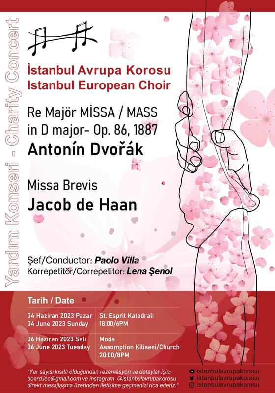
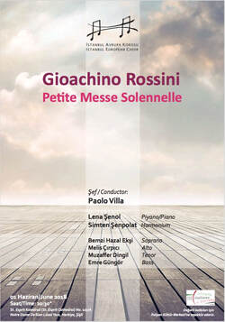

4 Haziran 2023, Pazar 18:00
Antonin Dvořák - Re Major Missa / Mass in D major Op. 86 1887 Jacob de Haan - Missa Brevis St. Esprit Katedrali, Harbiye Cumhuriyet Caddesi, 127/A Harbiye, Şişli, İstanbul 6 Haziran 2023, Pazar 18:00 Antonin Dvořák - Re Major Missa / Mass in D major Op. 86 1887 Jacob de Haan - Missa Brevis Moda Assomption Kilisesi Caferağa, Cem Sokak No: 11, Kadıköy, İstanbul  15 Ocak 2020, Çarşamba 20:30
Leopold Mozart - Missa Brevis Franz Joseph Haydn - Te Deum Marc-Antoine Charpentier - Te Deum Süleyman Saba Kültür ve Sanat Merkezi (Fulya Sanat) Dikilitaş Mah., Hakkı Yeten Cad. No: 10, Beşiktaş, İstanbul 16 Ocak 2020, Perşembe 20:30
Leopold Mozart - Missa Brevis Franz Joseph Haydn - Te Deum Marc-Antoine Charpentier - Te Deum Moda Assomption Kilisesi Caferağa, Cem Sokak No: 11, Kadıköy, İstanbul 1 Haziran 2018, Cuma 20:30
G. ROSSINI - Petite Messe Solennelle St. Esprit Katedrali, Harbiye Cumhuriyet Caddesi, 127/A Harbiye, Şişli, İstanbul Tel: 0539 200 2810  9 Ocak 2018, Salı 20:00 JAN DISMAS ZELENKA - MISSA DEI FILII ZWV 20 St. Esprit Katedrali, Harbiye Cumhuriyet Caddesi, 127/A Harbiye, Şişli, İstanbul Tel: 0539 200 2810 
13 Mayıs 2017, Cumartesi 20:00 ANTONIN DVORAK - STABAT MATER St. Esprit Katedrali, Harbiye Cumhuriyet Caddesi, 127/A Harbiye, Şişli, İstanbul Tel: 0539 200 2810 
10 Nisan 2017, Pazartesi 21:00 Selanik Karma Korosu ile Selanik Devlet Senfoni Orkestrası eşliğinde GUSTAV MAHLER 2. Senfoni Selanik Konser Salonu, Selanik, Yunanistan
27 Aralık 2016, Salı 20:00 YENİ YIL KONSERİ St. Esprit Katedrali, Harbiye Cumhuriyet Caddesi, 127/A Harbiye, Şişli, İstanbul Tel: 0539 200 2810
19 Kasım 2016, Cumartesi 20:00 Wolfgang Amadeus Mozart - Requiem Yeldeğirmeni Sanat (üst salon) Rasimpaşa Mahallesi, İskele Sokak, No: 43/1 Kadıköy/ İstanbul 
14 Haziran 2016, Salı 20:00 Maurice Ravel - Daphnis et Chloé Borusan İstanbul Filarmoni Orkestrası ile Aya Irini Müzesi'nde Ayrıntılı bilgi için: 26 Mart 2016, Cumartesi 20:00 Karl Jenkins - Stabat Mater Yeldeğirmeni Sanat Rasimpaşa Mahallesi, İskele Sokak, No: 43/1 Kadıköy/ İstanbul 


Ekim 2015'te Turkiye promiyerini gerceklestirdigimiz Karl Jenkins'in Stabat Mater eserini bu kez Bahcesehir Oda Orkestrasi ile birlikte seslendirdik.

10 Ocak 2016 Pazar 14:00, Cemal Reşit Rey Koro Kültürü Derneği 24 Ekim 2015, Cumartesi 20:00 - Karl Jenkins,Stabat Mater İstanbul Avrupa Korosu - Jenkins Stabat Mater Türkiye Prömiyeri ile sezonu açtı. Türkiye'nin en büyük ve köklü amatör müzik topluluğu İstanbul Avrupa Korosu, 24 Ekim Cumartesi Karl Jenkins'in "Stabat Mater" adlı eserinin Türkiye prömiyerini gerçekleştirdi. İstanbul Avrupa Korosu'nun Orkestra Prusart'la birlikte şef Cemi'i Can Deliorman yönetiminde verdiği konserde, Soprano Angela Ahıskal, Etnik Solist Canan Özgür ve Neyzen Ferhat Özden sahne aldı. Eserleri dünyada en çok icra edilen yaşayan bestecilerden Karl Jenkins'in 2008 yılında bestelediği "Stabat Mater" adlı eseri, geleneksel klasik batı müziğini darbuka, ney gibi doğu çalgıları ve vokallerle bir araya getirmesi, Aramice, Arapça, Yunanca, Latince ve İngilizce gibi farklı dilleri içinde barındırması yönünden izleyicilere oldukça farklı bir deneyim sundu. Konser Beşiktaş Belediyesi ve Aygaz'ın destekleri ile Boğaziçi Üniversitesi, Uçaksavar Kampüsü, Garanti Kültür Merkezi'nde 24 Ekim Cumartesi akşamı saat 20.00'de gerçekleşti.
|
3-4 Ekim 2015
Bir kez daha Mudanya'da haftasonu atölyesi için buluştuk.
22-23 Şubat 2014 - Mudanya'da Haftasonu Koro Atölyesi
Montania Hotel, Mudanya 21 Mayıs 2013 - Donizetti Klasik Müzik Ödülleri, 2013 Ödül Töreni.
İstanbul Avrupa Korosu "Yılın Korosu" ve "Yılın Klasik Müzik Topluluğu" ödüllerine layık görüldü. Rahmi Koç Müzesi |

|
|